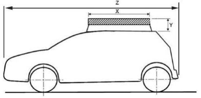
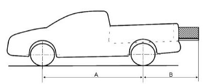

Leis
RESOLUÇÃO CONTRAN Nº 349 DE 17/05/2010
DOU de 20/05/2010
Dispõe sobre o transporte eventual de cargas ou de bicicletas nos veículos classificados nas espécies
automóvel, caminhonete, camioneta e utilitário e revoga as resoluções que menciona.
O CONSELHO NACIONAL DE TRÂNSITO CONTRAN, usando da competência que lhe confere o inciso I do
artigo 12 da Lei nº 9503, de 23 de setembro de 1997, que institui o Código de Trânsito Brasileiro - CTB, e conforme o
Decreto nº 4711, de 29 de maio de 2003, que dispõe sobre a coordenação do Sistema Nacional de Trânsito,
considerando as disposições sobre o transporte de cargas nos veículos contemplados por esta
Resolução, contidas na Convenção de Viena sobre o Trânsito Viário, promulgada pelo Decreto nº 86714, de 10
de dezembro de 1981;
considerando o disposto no artigo 109 da Lei nº 9503, de 23 de setembro de 1997, que institui o Código
de Trânsito Brasileiro - CTB;
considerando a necessidade de disciplinar o transporte eventual de cargas em automóveis,
caminhonetes e utilitários de modo a garantir a segurança do veículo e trânsito;
considerando a conveniência de atualizar as normas que tratam do transporte de bicicletas nos veículos
particulares.
considerando as vantagens proporcionadas pelo uso da bicicleta ao meio ambiente, à mobilidade e à
economia de combustível; resolve:
CAPITULO I
DISPOSIÇÕES GERAIS
Art. 1º - Estabelecer critérios para o transporte eventual de cargas e de bicicletas nos veículos
classificados na espécie automóvel, caminhonete, camioneta e utilitário.
Art. 2º - O transporte de cargas e de bicicletas deve respeitar o peso máximo especificado para o veículo.
Art. 3º - A carga ou a bicicleta deverá estar acondicionada e afixada de modo que:
I - não coloque em perigo as pessoas nem cause danos a propriedades públicas ou privadas, e em
especial, não se arraste pela via nem caia sobre esta;
II - não atrapalhe a visibilidade a frente do condutor nem comprometa a estabilidade ou condução do veículo;
III - não provoque ruído nem poeira;
IV - não oculte as luzes, incluídas as luzes de freio e os indicadores de direção e os dispositivos
refletores; ressalvada, entretanto, a ocultação da lanterna de freio elevada (categoria S3);
V - não exceda a largura máxima do veículo;
VI - não ultrapasse as dimensões autorizadas para veículos estabelecidas na Resolução CONTRAN nº
210, de 13 de novembro de 2006, que estabelece os limites de pesos e dimensões para veículos que transitam
por vias terrestres e dá outras providências, ou Resolução posterior que venha sucedêla.
VII - todos os acessórios, tais como cabos, correntes, lonas, grades ou redes que sirvam para acondicionar,
proteger e fixar a carga deverão estar devidamente ancorados e atender aos requisitos desta Resolução.
VIII - não se sobressaiam ou se projetem além do veículo pela frente.
Resenha Fiscal
Art. 4º - Será obrigatório o uso de segunda placa traseira de identificação nos veículos na hipótese do
transporte eventual de carga ou de bicicleta resultar no encobrimento, total ou parcial, da placa traseira.
§ 1º - A segunda placa de identificação será aposta em local visível, ao lado direito da traseira do veículo,
podendo ser instalada no pára-choque ou na carroceria, admitida a utilização de suportes adaptadores.
§ 2º - A segunda placa de identificação será lacrada na parte estrutural do veículo em que estiver
instalada (pára-choque ou carroceria).
CAPÍTULO II
REGRAS APLICÁVEIS AO TRANSPORTE EVENTUAL DE CARGAS
Art. 5º - Permite-se o transporte de cargas acondicionadas em bagageiros ou presas a suportes
apropriados devidamente afixados na parte superior externa da carroçaria.
§ 1º - O fabricante do bagageiro ou do suporte deve informar as condições de fixação da carga na parte
superior externa da carroçaria e sua fixação deve respeitar as condições e restrições estabelecidas pelo
fabricante do veículo § 2º As cargas, já considerada a altura do bagageiro ou do suporte, deverá ter altura
máxima de cinqüenta centímetros e suas dimensões, não devem ultrapassar o comprimento da carroçaria e a
largura da parte superior da carroçaria. (figura 1)
Y£ 50 cm, onde Y = altura máxima;
X £ Z, onde Z = comprimento da carroçaria e X = comprimento da carga.

Art. 6º - Nos veículos de que trata esta Resolução, será admitido o transporte eventual de carga
indivisível, respeitados os seguintes preceitos:
I - As cargas que sobressaiam ou se projetem além do veículo para trás, deverão estar bem visíveis e
sinalizadas. No período noturno, esta sinalização deverá ser feita por meio de uma luz vermelha e um
dispositivo refletor de cor vermelha.
II - O balanço traseiro não deve exceder 60% do valor da distância entre os dois eixos do veículo. (figura 2)
B £ 0,6 x A, onde B = Balanço traseiro e A = distância entre os dois eixos
Resenha Fiscal

Art. 7º Será admitida a circulação do veículo com compartimento de carga aberto apenas durante o
transporte de carga indivisível que ultrapasse o comprimento da caçamba ou do compartimento de carga.
CAPÍTULO III
REGRAS APLICÁVEIS AO TRANSPORTE DE BICICLETAS NA PARTE EXTERNA DOS VEÍCULOS
Art. 8º - A bicicleta poderá ser transportada na parte posterior externa ou sobre o teto, desde que fixada
em dispositivo apropriado, móvel ou fixo, aplicado diretamente ao veículo ou acoplado ao gancho de reboque.
§ 1º - O transporte de bicicletas na caçamba de caminhonetes deverá respeitar o disposto no Capítulo II
desta Resolução.
§ 2º - Na hipótese da bicicleta ser transportada sobre o teto não se aplica a altura especificada no
parágrafo 2º do Artigo 5º
Art. 9º - O dispositivo para transporte de bicicletas para aplicação na parte externa dos veículos deverá
ser fornecido com instruções precisas sobre:
I - Forma de instalação, permanente ou temporária, do dispositivo no veículo,
II- Modo de fixação da bicicleta ao dispositivo de transporte;
III - Quantidade máxima de bicicletas transportados, com segurança;
IV - Cuidados de segurança durante o transporte de forma a preservar a segurança do trânsito, do
veículo, dos passageiros e de terceiros.
CAPÍTULO IV
Disposições Finais
Art. 10 - Para efeito desta Resolução, a bicicleta é considerada como carga indivisível.
Art. 11 - O não atendimento ao disposto nesta Resolução acarretará na aplicação das penalidades
previstas nos artigos 230, IV, 231, II, IV e V e 248 do CTB, conforme infração a ser apurada.
Art. 12 - Esta Resolução entra em vigor noventa dias após a data de sua publicação, ficam revogadas as
Resoluções nº 577/81 e 549/79 e demais disposições em contrário.
ALFREDO PERES DA SILVA
Presidente do Conselho
RUI CÉSAR DA SILVEIRA BARBOSA
p/Ministério da Defesa
ESMERALDO MALHEIROS SANTOS
p/Ministério da Educação
RUDOLF DE NORONHA
p/Ministério do Meio Ambiente
ELCIONE DINIZ MACEDO
p/Ministério das Cidades